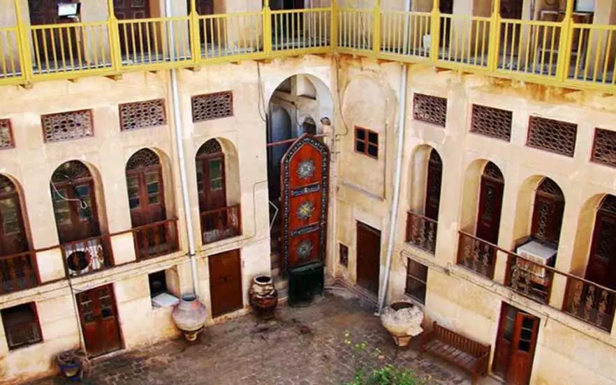

عمارت گلشن با فاصله ۱۰ متر از ساحل دریا یکی از بناهای زیبا با معماری قاجاری در بوشهر است. پنجرههای بلند با شیشههای رنگی و نمای بیرونی سفیدکاری شده، زیبایی خاصی به این مکان بخشیدهاند. این عمارت در طبقه اول شامل آبانبار، حمام، دستشویی و آشپزخانه بوده و طبقههای دوم و سوم آن نیز به ترتیب برای سکونت، پذیرایی و امور تجاری اختصاص یافته بودهاند. چهار پلکان حلزونی که از چهار طرف به بام میرسند، نمای بیرونی این عمارت را بسیار دیدنی کرده است. ساختار این عمارت هم در نوع خودش جالب است و از سنگهای مرجانی، رسوبات دریایی و ملات گچ به همراه چوب ساج دریایی و چوب صندل ساخته شده است. آدرس: بوشهر، بلوار خلیج فارس، نرسیده به ساختمان ایرانی
